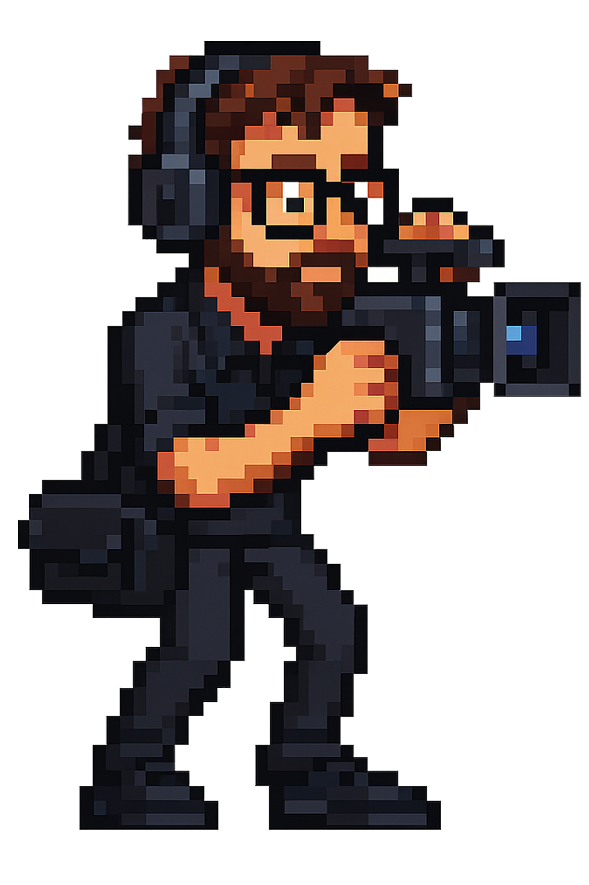

HIREDNERDS — SELECT YOUR JOF
A 16-bit console-style character selection. Click a Jof to view CV and workflows.
EMAIL MARKETING
WEB DEV

VIDEO PRODUCTION
WORKFLOW AUTOMATION
DIGITAL MARKETING
VOICE OVER / ACTING / PRESENTING